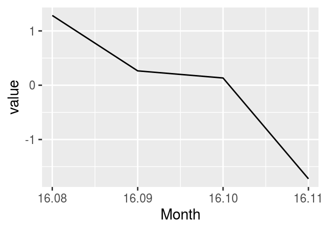
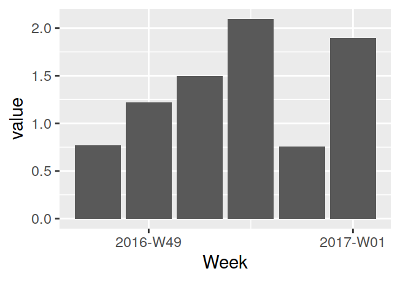
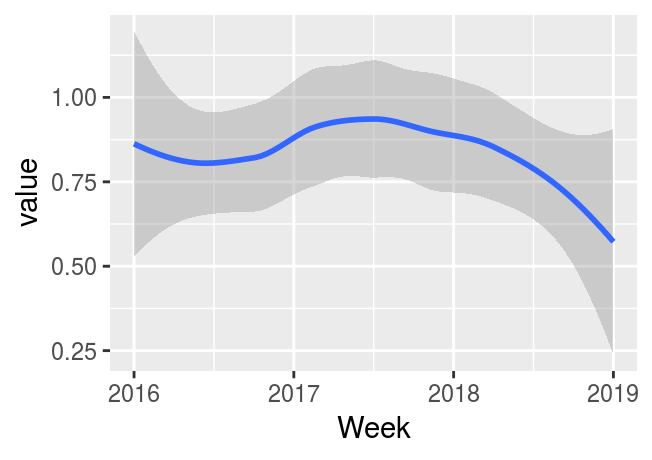
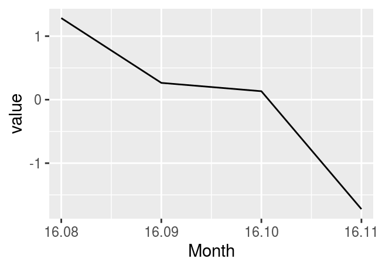
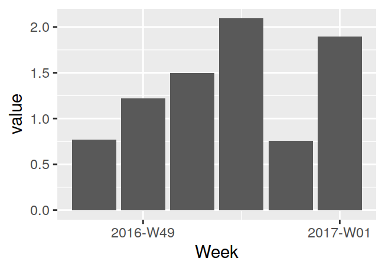
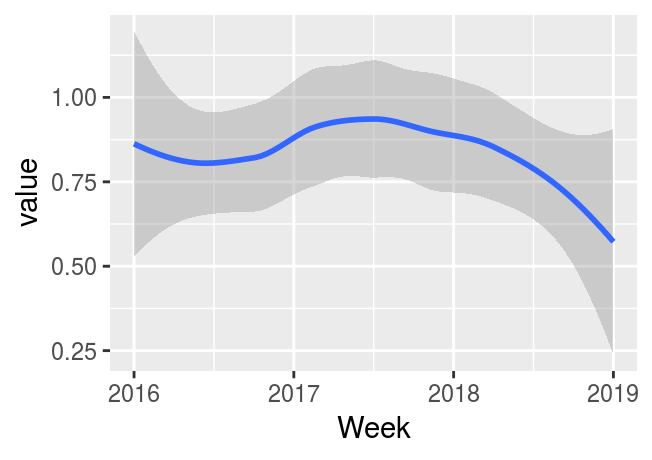
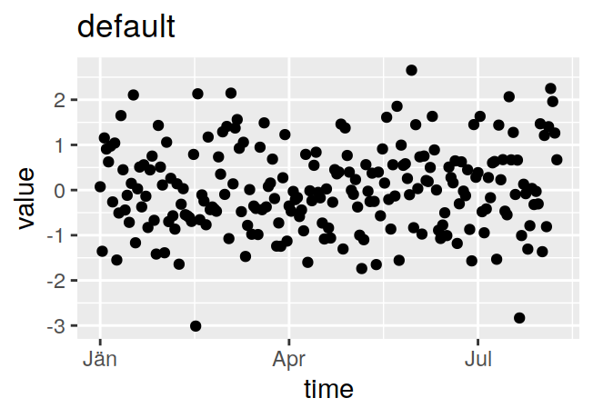
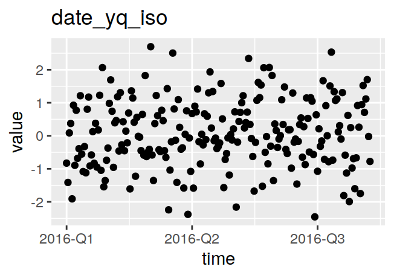
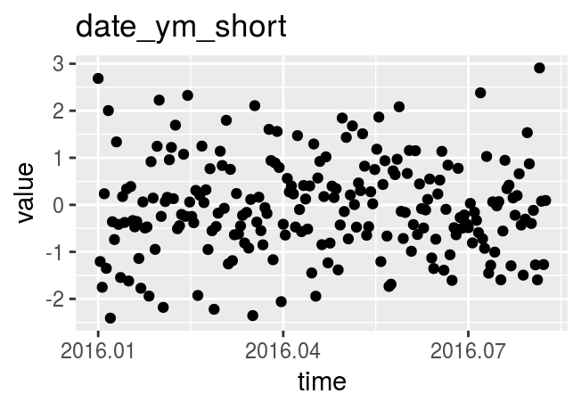
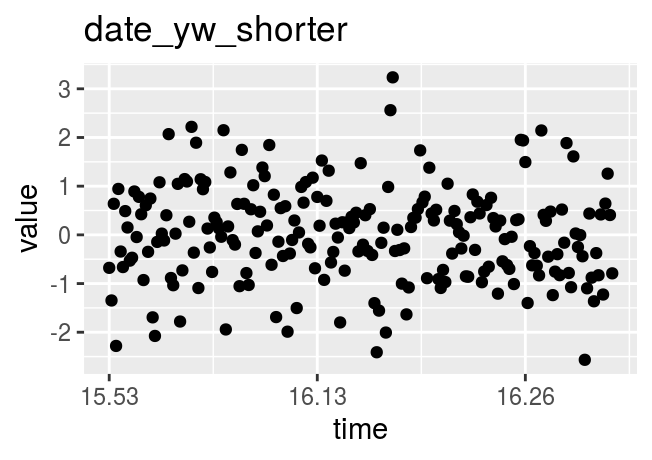

Dint: Integer Representations of Calendar Periods
Stefan Fleck
<<<<<<< HEAD2019-01-04
=======2019-02-14
>>>>>>> 1de44b2bdbdfd573eadb87054eac7e0c24bbc133 Source:vignettes/dint.Rmd
dint.Rmdlibrary(dint)dint helps you with working with year-quarter, year-month and year-isoweek dates. It stores them in an easily human readable integer format, e.q 20141 for the first quarter of 2014 and so forth. If you are already using such integers to represent dates, dint can make many common operations easier for you.
dint is implemented in base R and comes with zero external dependencies. Even if you don’t work with such special dates directly, dint can still help you at formatting dates, labelling plot axes, or getting first / last days of calendar periods (quarters, months, isoweeks).
date_xx Vectors
dint provides 4 different S3 classes that inherit from date_xx1.
-
date_yqfor year-quarter dates -
date_ywfor year-month dates -
date_ywfor year-isoweek dates. Please note that the year for isoweeks does not necessarily correspond to the calendar year wikipedia -
date_yfor storing years. This class exists for consistency and provides little advantage over storing years as bare integers. The main use of this class is in package development when you want to write your own generics and methods for years.
Creation
date_xx vectors can be created using explicit constructors…
date_yq(2015, 1)
#> [1] "2015-Q1"
date_ym(c(2015, 2016), c(1, 2))
#> [1] "2015-M01" "2016-M02"
date_yw(c(2008, 2009), 1)
#> [1] "2008-W01" "2009-W01"..or through coercion of Dates or integers
as_date_yq(Sys.Date())
#> [1] "2019-Q1"
as_date_yq(20141) # the last digit is interpreted as quarter
#> [1] "2014-Q1"
as_date_ym(201412) # the last two digits are interpreted as month
#> [1] "2014-M12"
as_date_yw("2018-01-01") # anything else that can be parsed by as.Date() works
#> [1] "2018-W01"Coercion
You can coerce Dates to any date_xx subclass with as_date_**()
d <- as.Date("2018-05-12")
as_date_yq(d)
#> [1] "2018-Q2"
as_date_ym(d)
#> [1] "2018-M05"
as_date_yw(d)
#> [1] "2018-W19"
as_date_y(d)
#> [1] "2018"Conversely, you can convert date_xx back to R Dates
q <- date_yq(2015, 1)
as.Date(q)
#> [1] "2015-01-01"
as.POSIXlt(q)
#> [1] "2015-01-01 UTC"as.POSIXct() creates datetimes in UTC/GMT, so the result might not always be as expected, depending on your local timezone.
as.POSIXct(q)
#> [1] "2015-01-01 01:00:00 CET"
as.POSIXct(q, tz = "GMT")
#> [1] "2015-01-01 01:00:00 CET"
print(as.POSIXct(q), tz = "GMT")
#> [1] "2015-01-01 GMT"
print(as.POSIXct(q), tz = "CET")
#> [1] "2015-01-01 01:00:00 CET"Arithmetics and Sequences
All date_xx support addition, subtraction and sequence generation.
q <- date_yq(2014, 4)
q + 1
#> [1] "2015-Q1"
q - 1
#> [1] "2014-Q3"
seq(q - 2, q + 2)
#> [1] "2014-Q2" "2014-Q3" "2014-Q4" "2015-Q1" "2015-Q2"
m <- date_ym(2014, 12)
m + 1
#> [1] "2015-M01"
m - 1
#> [1] "2014-M11"
seq(m - 2, m + 2)
#> [1] "2014-M10" "2014-M11" "2014-M12" "2015-M01" "2015-M02"
w <- date_yw(2017, 33)
w + 1
#> [1] "2017-W34"
w - 1
#> [1] "2017-W32"
seq(w - 2, w + 2)
#> [1] "2017-W31" "2017-W32" "2017-W33" "2017-W34" "2017-W35"Accessors
date_xx Components
You can access components of date_xx (e.g the quarter of a date_yq) with accessor functions. You can also use these functions to convert between date_xx vectors.
q <- date_yq(2014, 4)
get_year(q)
#> [1] 2014
get_quarter(q)
#> [1] 4
get_month(q) # defaults to first month of quarter
#> [1] 10
get_isoweek(q)
#> [1] 40
m <- date_ym(2014, 12)
get_year(m)
#> [1] 2014
get_quarter(m)
#> [1] 4
get_month(m)
#> [1] 12
get_isoweek(m)
#> [1] 49
w <- date_yw(2014, 33)
get_year(w)
#> [1] 2014
get_quarter(w)
#> [1] 3
get_month(w)
#> [1] 8
get_isoweek(w)
#> [1] 33lubridate Compat Accessors
If you use lubridate, you can just use the slightly less verbose lubridate accessors
suppressPackageStartupMessages(library(lubridate))
year(q)
#> [1] 2014
quarter(q)
#> [1] 4
month(q)
#> [1] 10You can get the first and last days of calendar periods with dint
q <- date_yq(2015, 1)
first_of_quarter(q) # the same as as.Date(q), but more explicit
#> [1] "2015-01-01"
last_of_quarter(q) # the same as as.Date(q), but more explicit
#> [1] "2015-03-31"These functions work with normal dates
d <- as.Date("2018-05-12")
first_of_year(d)
#> [1] "2018-01-01"
last_of_year(d)
#> [1] "2018-12-31"
first_of_quarter(d)
#> [1] "2018-04-01"
last_of_quarter(d)
#> [1] "2018-06-30"
first_of_month(d)
#> [1] "2018-05-01"
last_of_month(d)
#> [1] "2018-05-31"
first_of_isoweek(d)
#> [1] "2018-05-07"
last_of_isoweek(d)
#> [1] "2018-05-13"
# Alternativeley you can use these:
first_of_yq(2012, 2)
#> [1] "2012-04-01"
last_of_ym(2012, 2)
#> [1] "2012-02-29"
last_of_yw(2011, 52)
#> [1] "2012-01-01"Formatting
format() Methods
Formating date_xx vectors is easy and uses a subset of the placeholders of base::strptime() (+ %q for quarters).
Shorthands
dint also provides all-in-one functions for common tasks
format_yq(Sys.Date())
#> [1] "2019-Q1"
format_yq_short(Sys.Date())
#> [1] "2019.1"
format_yq_shorter(Sys.Date())
#> [1] "19.1"
format_ym(Sys.Date())
#> [1] "2019-M02"
format_yw(Sys.Date())
#> [1] "2019-W07"ggplot2: Axis Labels
library(ggplot2)Labelling date_xx Vectors
dint implements scale_date_**() and date_**_breaks() that provide nicely labelled axes for ggplots by default
q <- data.frame(
time = seq(date_yq(2016, 1), date_yq(2016, 4)),
value = rnorm(4)
)
m <- data.frame(
time = seq(date_ym(2016, 8), date_ym(2016, 11)),
value = rnorm(4)
)
w <- data.frame(
time = seq(date_yw(2016, 48), date_yw(2017, 1)),
value = abs(rnorm(6))
)
w2 <- data.frame(
time = seq(date_yw(2016, 1), date_yw(2019, 1)),
value = abs(rnorm(157))
)
ggplot(q, aes(x = time, y = value)) +
geom_point()
ggplot(m, aes(x = time, y = value)) +
geom_line() +
scale_x_date_ym(labels = format_ym_shorter)
ggplot(w, aes(x = time, y = value)) +
geom_col() +
scale_x_date_yw(labels = format_yw_iso)
ggplot(w2, aes(x = time, y = value)) +
geom_smooth()
#> `geom_smooth()` using method = 'loess' and formula 'y ~ x' 

Labelling Date Vectors
If you use R Date vectors, you can still use the formatting functions supplied by dint to generate nice axis labels.
x <- data.frame(
time = seq(as.Date("2016-01-01"), as.Date("2016-08-08"), by = "day"),
value = rnorm(221)
)
p <- ggplot(
x,
aes(
x = time,
y = value)
) + geom_point()
p + ggtitle("iso") + ggtitle("default")
p + scale_x_date(labels = format_yq_iso) + ggtitle("date_yq_iso")
p + scale_x_date(labels = format_ym_short) + ggtitle("date_ym_short")
p + scale_x_date(labels = format_yw_shorter) + ggtitle("date_yw_shorter")
date_xxis just a superclass for all dint date classes, you do not need to use it directly↩